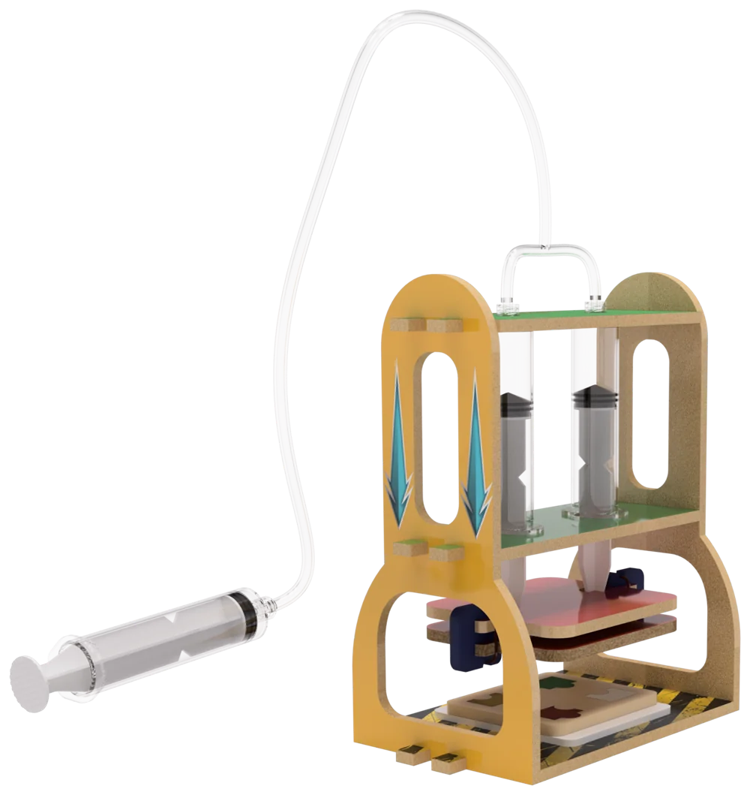
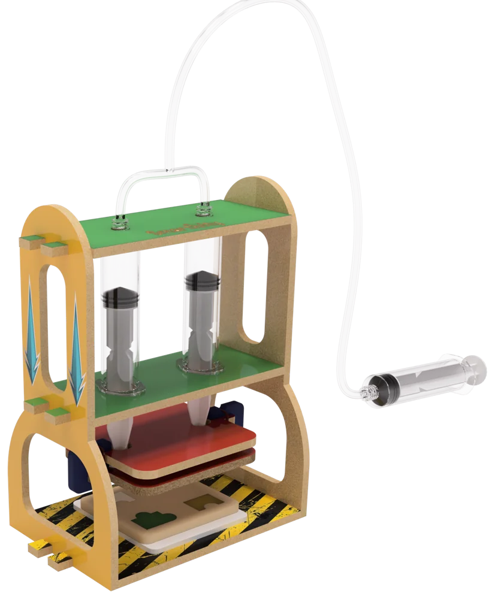
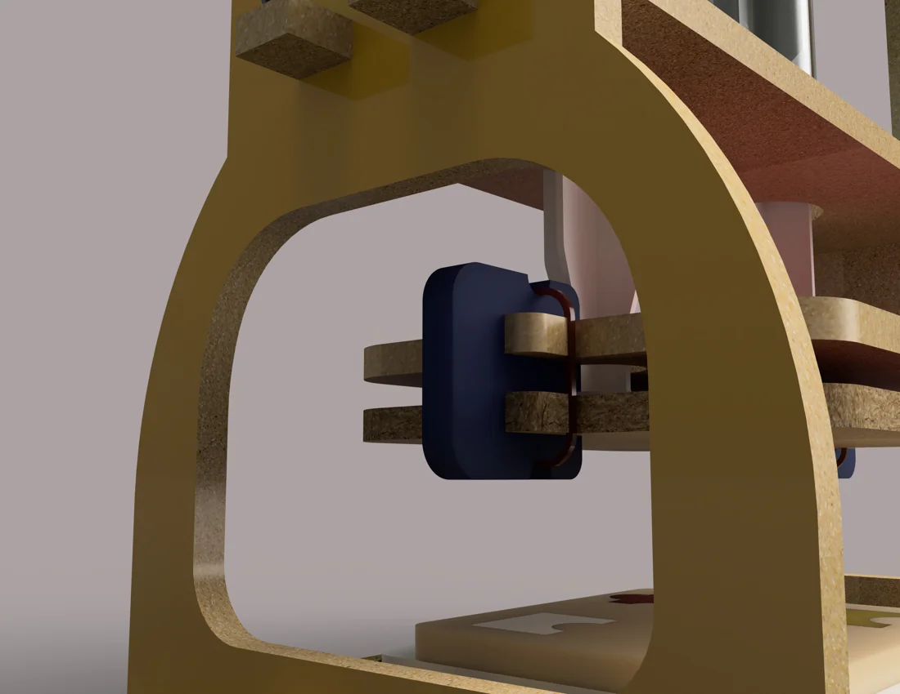
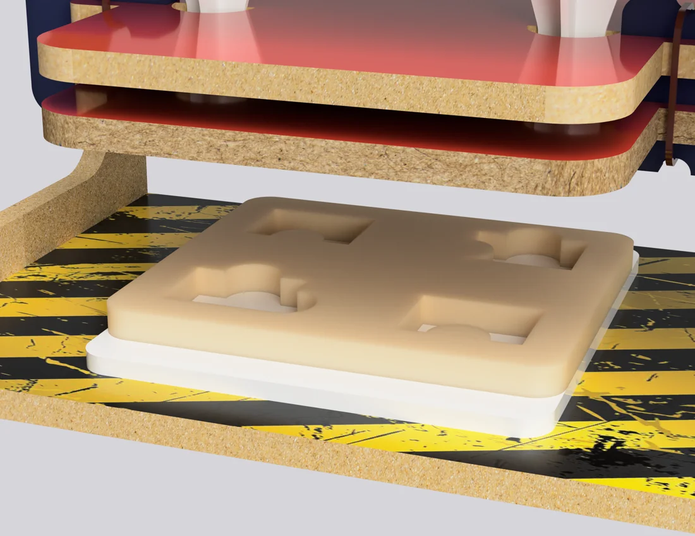
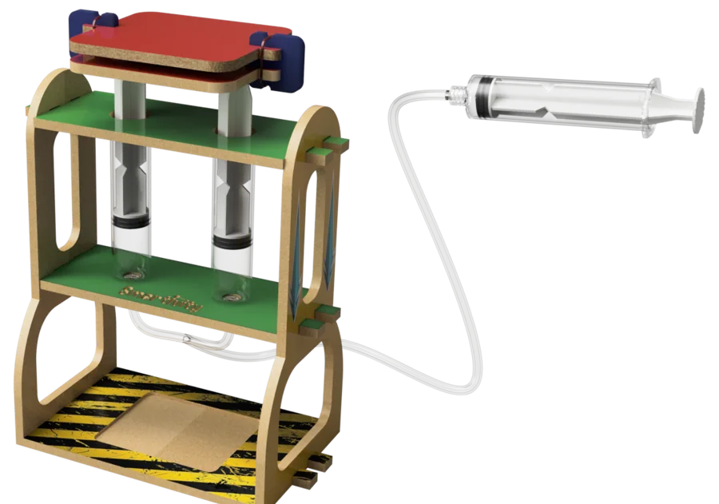

Hydraulic Crusher / Lifter
push one syringe, squash anything soft
A DIY press kids build from laser-cut MDF and syringes. Crush clay, mould puzzle shapes, flatten "recycling", then rebuild the same parts into a lifter.

Oddly satisfying, made safe.
Kids watch hours of "oddly satisfying" videos of a hydraulic press flattening things. Six-year-olds are also at the "what happens if…?" age. This kit puts that press in their hands: small, safe and powered only by water and their own push.
It's pitched as an add-on to Smartivity's existing hydraulic kits, so it adds play without starting a new line.
-
Press play
Squash clay, foam and paper shapes, and watch them flatten. The YouTube fun, screen-free.
-
Puzzle press
Pattern moulds under the plate turn clay into puzzle pieces kids press, match and solve.
-
Recycle & build
Role-play as a recycler: crush paper cups, flatten cartons and talk about waste and reuse.
No motor.
Just water.
Push the hand syringe and the water inside travels up the tube into the two syringes on the press. Their pistons drive the plate down onto whatever sits on the tray. Pull it back and the plate rises again.
It's a hands-on first look at hydraulics, pressure and force transfer, the same idea as a car jack.
MDF, syringes, one tube.


Easy, strong connectors
Clip joints that kids can rebuild again and again without parts loosening.

Pattern moulds
Swap-in trays turn the press into a puzzle maker.
Flip the blocks. Now it lifts.

plate pushes down ↓